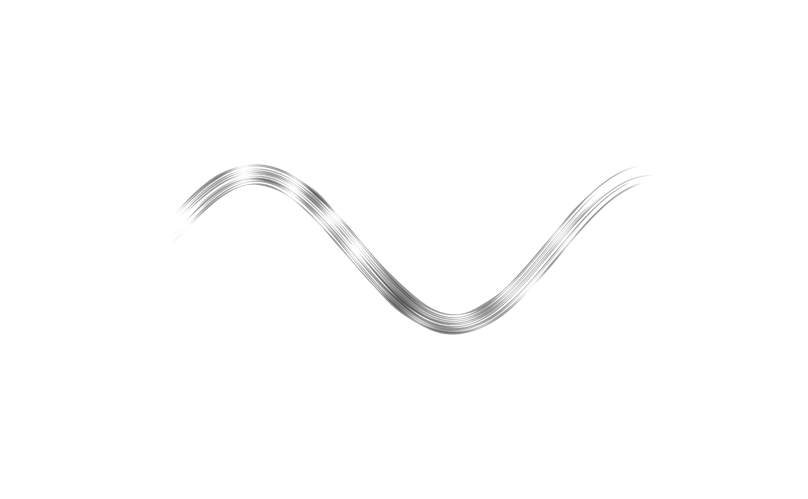

A fanned bristle/dry-brush effect along a path
effect_bristle.Rdeffect_bristle() builds a sketch of n_bristles copies of a
template drawable, fanned out perpendicular to its own backbone path –
like effect_tremor(), no single drawable can express this by itself,
since a dry-brush look comes from several independently-frayed,
independently wobbling strands laid side by side, not one stroke. Each
bristle is a copy of object (via S7::set_props()) that:
Usage
effect_bristle(
object,
n_bristles = 9L,
spread = 0.3,
width_jitter = 0.3,
fray = 0.15,
jitter = 0.015,
jitter_frequency = 1.2,
n = 100L,
seed = 1L
)Arguments
- object
A template pathlike drawable (
@pathlike == TRUE, see drawable's docs) with awidthproperty – typicallyshape_stroke(). Every bristle is a copy ofobjectwith its own fannedx/y, scaledwidth, and (ifobjecthas annproperty) resampledn; all other properties (style,distortion,trans, ...) carry over unchanged.- n_bristles
Number of bristles to fan out. Must be a positive integer. Default
9L.- spread
Total perpendicular distance the bristles fan across, centred on the backbone. Must be non-negative. Default
0.3.- width_jitter
Fractional random variation applied to each bristle's own
object@width(e.g.0.3scales width by a factor drawn uniformly from[0.7, 1.3]). Must be in[0, 1). Default0.3.- fray
Maximum fraction of the backbone's own length randomly trimmed from each bristle's start and end. Must be in
[0, 0.5). Default0.15.- jitter, jitter_frequency
Passed to
effect_tremor()'s own arguments of the same name, controlling each bristle's independent wobble. Defaults0.015/1.2.- n
Number of points used along the backbone when fanning bristles out (independent of any
npropertyobjectitself has). Must be at least2. Default100L.- seed
Integer seed for the per-bristle randomization and wobble. Default
1L.
Value
A sketch containing n_bristles drawables.
Details
is offset from the backbone by a fixed perpendicular distance (via the same per-point unit normal
shape_stroke()itself uses,stroke_normals()), evenly spaced acrossspread;is trimmed to a random sub-range of the backbone's own length (
fraycontrols how much), so bristles start/end raggedly rather than in one clean line – the same "frayed edge" a real brush's outer bristles show as it runs dry;has its own randomly-scaled
width(viawidth_jitter, applied toobject@width); andis independently wobbled via
effect_tremor()(layers = 1L, since the fanning here already does the layering workeffect_tremor()normally provides – one wobbling copy per bristle position, not several wobbling copies of one path).
Every other property of object – style, distortion, trans, ... –
carries over to every bristle unchanged, since each is built with
S7::set_props() rather than a fresh constructor call.
shape_stroke()'s own taper-to-zero at both ends does double duty as
each bristle's tip fade, needing no extra work here. Randomization
(fray range, width scaling) is scoped per bristle with
withr::with_seed(), the same reproducibility convention
fill_stipple()/fill_scatter()/fill_halftone() already use, so it
never leaks into the caller's global random state.
See also
Other effects:
effect_grain(),
effect_tremor()
Examples
t <- seq(0, 8, length.out = 200)
draw(effect_bristle(
shape_stroke(
x = t, y = sin(t) * 1.2, width = 0.06,
fill = "black", fill_alpha = 0.4, color = NA_character_
),
n_bristles = 11L, spread = 0.3
))
